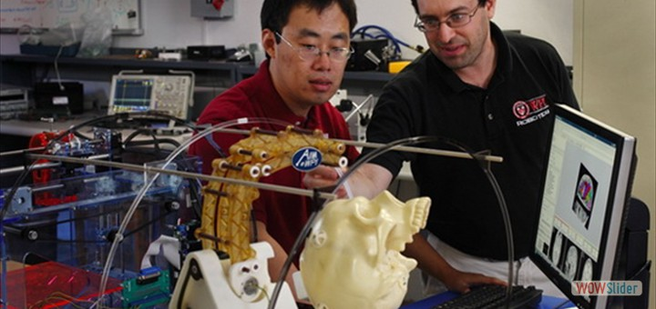

MRI-guided Robot for Neurosurgery
We have developed a master-slave telesurgery robot for MRI-guided robotic neurosurgery. This system consists of a piezoelectrically actuated slave robot for needle placement with integrated fiber optic force sensor utilizing Fabry-Perot interferometry sensing principle. A pneumatically actuated haptic master robot is developed to render force associated with needle placement interventions to the clinician. Teleoperated needle insertion has been demonstrated under live MR imaging to steer needle to multiple targets.
MRI-guided Robot for Prostate Interventions
In collaboration with Harvard Medical School, we have developed three generations of MRI-guided prostate intervention robots in collaboration with Johns Hopkins and Brigham and Women's Hospital. The robotic system, designed to improve prostate cancer biopsies, is being tested as part of a larger clinical trial at BWH. The first generation is a cylidrical needle placement robot, the 2nd generation utilized a concentric tube mechanism to actively steer needles, and the third generation deploys a parallel mechanism for angulated needle placement. Prostate cancer is the last form of cancer still diagnosed with blind needle biopsies, so we are working to change that with image-guided technology.